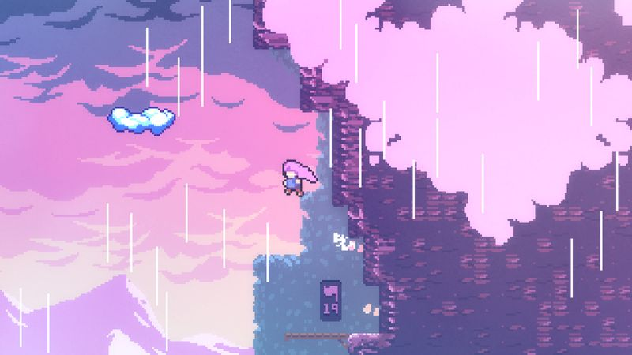
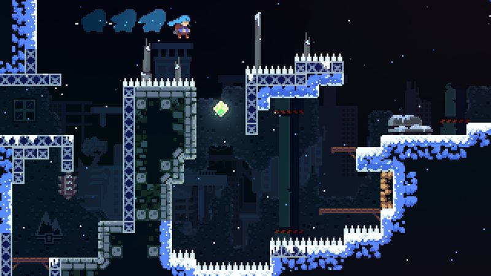

The thirty-second version
The best air-dash in games. Also the kindest.
The mountain wants you to be okay. The mountain also wants to kill you. Very balanced mountain.
Celeste is a precision platformer with real feelings, which is not a sentence we expected to type. The core movement is as tight as anything since Super Meat Boy, and the story about anxiety is genuinely moving without being twee about it. Assist mode makes it available to anyone. That is a big deal, and the game refuses to make you feel bad about using it.
Okay, what is this thing?
You are Madeline. You are climbing a mountain. A wispy purple version of you is trying to talk you out of it. Also the floor is spikes. Also there are strawberries, and you don't have to collect the strawberries, which is a stunning show of restraint from a game about precision platforming. This is the sort of game that gives you an option to be kind to yourself and completely means it.
Under the hood it's Maddy Thorson at their sharpest: a jump, a climb, and a single mid-air dash that recharges when you touch ground. That's the whole toolkit. Every screen is a self-contained puzzle with a checkpoint at the door, so death is basically free and instant retries mean you're only ever ten seconds from another attempt. The B-sides and C-sides are the real final boss, and yes, they broke us.


Why it escaped the group chat
- Assist mode lets you slow the game down, add extra dashes, and turn off death, and the game refuses to make you feel bad about any of it.
- Every death is instant-retry with a checkpoint per screen, so the loop is punishing without being punishing.
- The B-side and C-side chapters are optional and roughly as hard as anything the genre has produced.
Three dads enter
01
Dad Who Skipped the Tutorial
First precision platformer I've ever seen credits on.
I turned on infinite dashes in chapter three and finished the whole main game. This is the first precision platformer I've ever seen credits on, and I'd like the record to reflect that. Then I told the other two the story hit me harder than I expected, and got quiet. It was a whole thing. Ten out of ten evening.
02
The Descent Guy
Wave-dashing has entered my vocabulary, permanently.
I turned assist mode off, cleared every B-side, and started chasing golden strawberries around the point most people would've moved on with their lives. I can lecture you on wave-dashing. I do. I'm convinced the movement tech alone puts this in the top ten of the decade, and nobody's going to argue me out of it.
03
Normal-ish Dad
A twelve-hour game that feels like a full meal.
I finished the main game over about twelve hours on PC and I reckon that's the correct scope. I liked that any given session could be twenty minutes and still feel complete, and that the story didn't force me to sit through a cutscene at 11pm. I've used it as a gateway drug on at least two friends the other two know about.
Who it is for and what to watch
Invite these people
- Precision-platformer-curious players who've been scared off before
- Anyone who thinks games can't do mental health without being embarrassing
- Short-session players who want to feel finished
Dad caveats
- Base Celeste is not long, and the extras are the meat if you want more
- The soundtrack will follow you around for weeks whether you want it to or not
- You will absolutely try wave-dashing in the kitchen and hurt yourself
Receipts
Two of us finished the main game and most of the B-sides on PC; one of us used assist mode without shame, one refused. The third finished it once and considers his Celeste career complete.